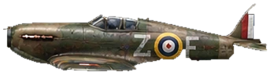
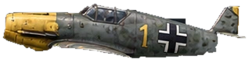

Spitfire Mk I
RAF fighter
Gameplay-scale example
Six aircraft with painted WWII detailing and compact silhouettes. The four new multi-engine aircraft replace the previous flat prototypes. These appear in normal game play; switch to the classic renderer for comparison.
Play the updated WingmanCompare classic artwork
RAF fighter

Luftwaffe fighter

RAF heavy fighter

Luftwaffe heavy fighter

RAF bomber

Luftwaffe bomber
Actual planes are smaller in flight, and sprites rotate with your aircraft. Hit sparks, Harden flashing and Corkscrew exhaust are visible in the live dogfight.